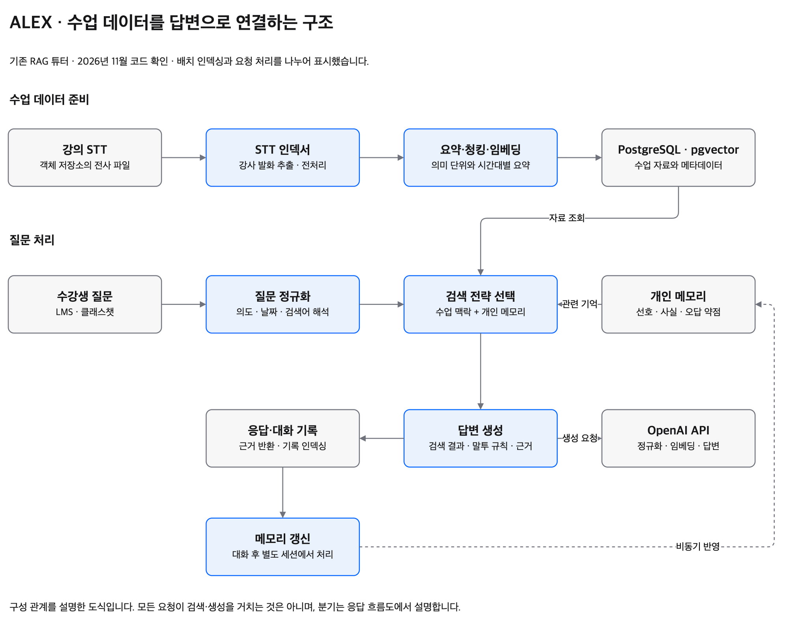
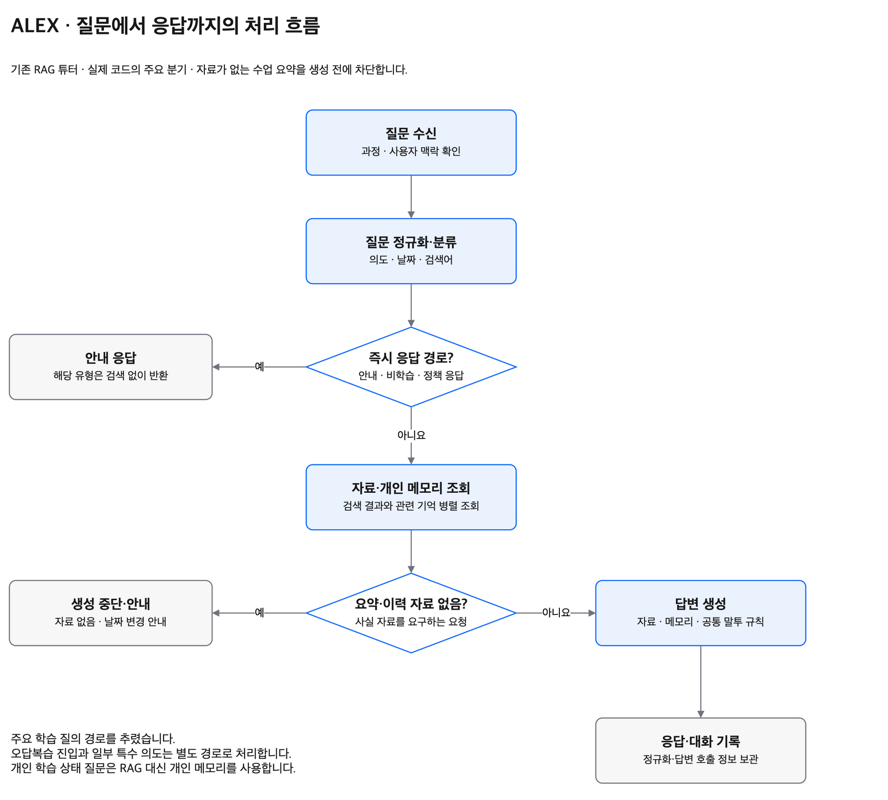
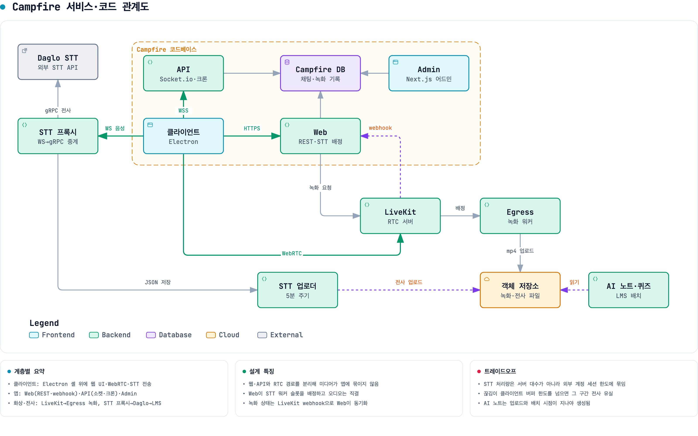

포트폴리오 목록
아키텍처·플로우 설계
시스템이 어떻게 이어지고, 왜 그렇게 나누었는지 그림으로 설명합니다.
원본의 작성 시점과 구현·설계 상태를 각 자료에 표시했습니다.
ALEX와 LION 설계
수업 데이터로 답하는 RAG 튜터를 구현한 경험과, 질문을 시작하기 쉬운 학습 도우미로 바꾸려는 설계 판단을 함께 담았습니다.
관련 프로젝트 읽기2026년 11월 코드 확인
ALEX 수업 데이터와 RAG 구성

강의 STT를 인덱싱하는 배치와 질문에 답하는 경로를 나눴습니다. 검색 결과와 개인 메모리를 답변에 연결하고, 대화 후 메모리는 별도로 갱신합니다. 그림을 누르면 확대해서 볼 수 있습니다.2026년 11월 코드 확인
ALEX 질문 처리와 생성 중단 흐름

질문을 분류한 뒤 안내 응답과 검색 경로를 나눕니다. 요약·대화 이력에 근거 자료가 없으면 답변을 생성하기 전에 안내로 종료합니다. 그림을 누르면 확대해서 볼 수 있습니다.2026년 11월 v2 설계·리뷰 제안
ALEX에서 LION으로 바꾼 설계
 일반 질문은 LLM이 답하고 수업 데이터는 키워드·복습·추천 질문에 쓰도록 방향을 바꿨습니다. 제 역할은 방향 전환 가이드, 서비스 책임 분리와 구조 설계 리뷰입니다. 설계 보드 작성과 구현은 담당 개발자가 맡았습니다. 그림을 누르면 확대해서 볼 수 있습니다.
일반 질문은 LLM이 답하고 수업 데이터는 키워드·복습·추천 질문에 쓰도록 방향을 바꿨습니다. 제 역할은 방향 전환 가이드, 서비스 책임 분리와 구조 설계 리뷰입니다. 설계 보드 작성과 구현은 담당 개발자가 맡았습니다. 그림을 누르면 확대해서 볼 수 있습니다.인프라와 플랫폼
서비스를 배포하고 운영하는 도구, 플랫폼 사이의 연결을 설명합니다.
관련 프로젝트 읽기2026년 10월 27일 구성도 기반
Kubernetes·OKE 운영 플랫폼
 GitHub Actions의 이미지 발행, GitOps·ArgoCD 배포와 OKE 운영을 연결했습니다. Kong, Karpenter, Terraform과 관측 도구의 역할을 함께 정리했습니다. 그림을 누르면 확대해서 볼 수 있습니다.
GitHub Actions의 이미지 발행, GitOps·ArgoCD 배포와 OKE 운영을 연결했습니다. Kong, Karpenter, Terraform과 관측 도구의 역할을 함께 정리했습니다. 그림을 누르면 확대해서 볼 수 있습니다.2026년 10월 27일 원본
멋사 플랫폼 서비스 관계도
 인증·수강권을 중심으로 LMS, ATS, SaaS와 수업 도구가 이어지는 구조입니다. 플랫폼 간 의존 관계와 AI 공통 서비스의 위치를 설명합니다. 그림을 누르면 확대해서 볼 수 있습니다.
인증·수강권을 중심으로 LMS, ATS, SaaS와 수업 도구가 이어지는 구조입니다. 플랫폼 간 의존 관계와 AI 공통 서비스의 위치를 설명합니다. 그림을 누르면 확대해서 볼 수 있습니다.실시간 수업과 AI 연동
강의 음성이 전사 데이터와 AI 학습 기능으로 이어지는 연동 맥락입니다.
관련 프로젝트 읽기2026년 10월 27일 원본
Campfire 서비스·코드 관계도

실시간 수업 플랫폼의 웹·소켓·미디어·STT 경로를 정리한 자료입니다. 제가 맡은 AI 학습 기능이 전사 데이터를 받는 지점을 함께 보여 줍니다. 플랫폼 전체 구현을 본인의 역할로 표기하지 않았습니다. 그림을 누르면 확대해서 볼 수 있습니다.미래이력서 구성과 사용자 흐름
시스템 구성과 화면 흐름을 함께 보며 생성·검수·노출 조건을 확인할 수 있습니다.
관련 프로젝트 읽기2026년 10월 21일 설계본 기반
미래이력서 생성·검수 구성
 본인 열람 API와 운영자 API, 내부 이벤트, 생성 워커를 분리했습니다. 코드 검증과 LLM 검수, 재시도와 결과 저장의 책임을 표시했습니다. 그림을 누르면 확대해서 볼 수 있습니다.
본인 열람 API와 운영자 API, 내부 이벤트, 생성 워커를 분리했습니다. 코드 검증과 LLM 검수, 재시도와 결과 저장의 책임을 표시했습니다. 그림을 누르면 확대해서 볼 수 있습니다.2026년 10월 설계 원본
미래이력서 사용자 흐름 설계
 로그인, 본인 확인, 열람 가능 상태와 합불 결과에 따라 다음 행동이 달라지는 사용자 흐름입니다. 화면 식별자가 포함된 기획 설계본입니다. 그림을 누르면 확대해서 볼 수 있습니다.
로그인, 본인 확인, 열람 가능 상태와 합불 결과에 따라 다음 행동이 달라지는 사용자 흐름입니다. 화면 식별자가 포함된 기획 설계본입니다. 그림을 누르면 확대해서 볼 수 있습니다.2026년 10월 설계 원본
미래이력서 운영자 흐름 설계
 템플릿 확정, 생성·검수 재시도, 결과 확정과 노출 조건을 나눴습니다. 생성 성공과 사용자에게 공개할 수 있는 상태를 별도로 판단합니다. 그림을 누르면 확대해서 볼 수 있습니다.
템플릿 확정, 생성·검수 재시도, 결과 확정과 노출 조건을 나눴습니다. 생성 성공과 사용자에게 공개할 수 있는 상태를 별도로 판단합니다. 그림을 누르면 확대해서 볼 수 있습니다.